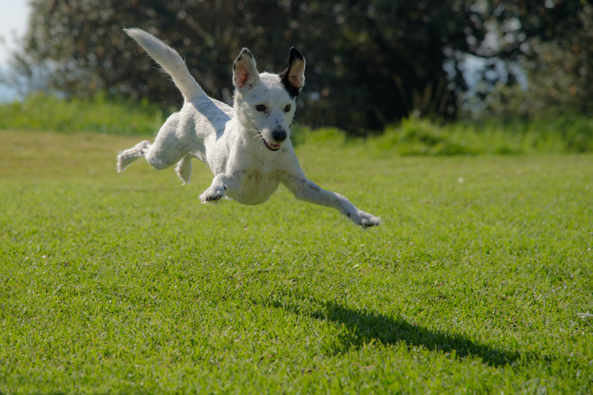
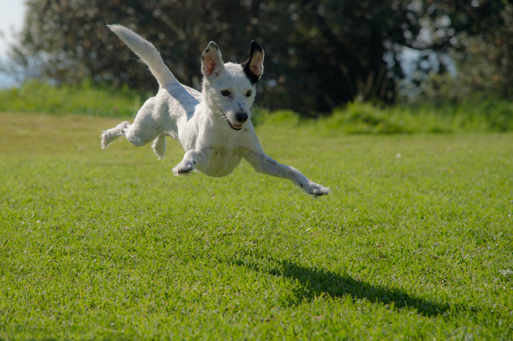

Our Mission
To use Internet technology and the resources it can generate to:
- Increase public awareness of the availability of high-quality adoptable pets
- Increase the overall effectiveness of pet adoption programs across North America to the extent that the euthanasia of adoptable pets is eliminated
- Elevate the status of pets to that of family member
From the comfort of their personal computers, pet lovers can search for a pet that best matches their needs. They can then reference a shelter’s web page and discover what services it offers. Rexcue will soon include discussion forums, a pet-care resource directory and a library of free pet-care articles to help keep pets in their homes.
Adoptable Furry Friends!


 
